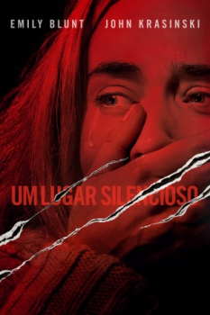

Um Lugar Silencioso (2018)


Regra n.º 1: Não faças barulho. Regra n.º 2: Não saias do caminho. Regra n.º 3: Vermelho quer dizer correr.

Avaliação (TMDb):


7.4/10 (9.5K votos)
Avaliação (Usuário):
Outro Título:A Quiet Place
País:United States, 91 minutos
Idiomas falados:Inglês, Espanhol, Português
Gênero(s):Terror, Drama, Sci-Fi
Diretor(s):John Krasinski
Codec:MPEG-2 (DVD)
Número: 3749
Sinopse:
Em uma fazenda dos Estados Unidos, uma família do meio-oeste é perseguida por uma entidade fantasmagórica assustadora. Para se protegerem, eles devem permanecer em silêncio absoluto, a qualquer custo, pois o perigo é ativado pela percepção do som.
Elenco:
Emily Blunt, John Krasinski, Millicent Simmonds, Noah Jupe, Cade Woodward, Leon Russom
Tipo de mídia: DVD5,
Legendas: Inglês, Espanhol, Português,
Alugado: Não
Tela: 2.55:1